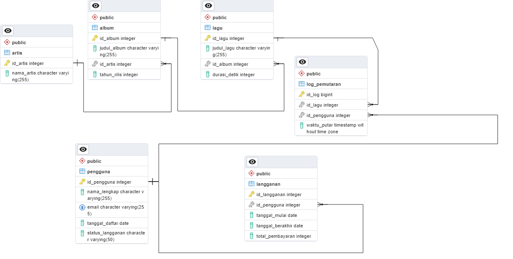

Fakultas Teknologi Elektro dan Informatika Cerdas - ITS
Petunjuk Penggunaan:
Akses menggunakan Safe Exam Browser (SEB)
Masukkan NRP Anda dengan benar (10 digit)
Klik "Mulai Ujian" untuk memulai sesi ujian
Waktu ujian akan dimulai setelah Anda mengkonfirmasi
Setiap soal memiliki input jawaban terpisah
Jawaban tersimpan otomatis setiap 30 detik di browser Anda
Jawaban final akan dikirim ke server saat finalisasi ujian
Pastikan koneksi internet stabil untuk finalisasi
Ujian hanya dapat dilakukan SATU KALI
Sistem Manajemen Basis Data
|
Ujian Akhir Semester (EAS)
Mata Kuliah
: Sistem Manajemen Basis Data
Semester
: ☐ Gasal ☑ Genap
Kode Mata Kuliah
: EC234401
Tahun Ajaran
: 2024/2025
Nama Dosen
: Arta Kusuma Hernanda, M.T
Jenis Evaluasi
: ☐ Kuis ☐ Tugas ☐ ETS ☑ EAS
Waktu
: 120 Menit
Sifat Evaluasi
: ☐ Terbuka ☑ Tertutup ☐ Lainnya
Capaian Pembelajaran
CPMK-4: Mahasiswa memiliki kemampuan untuk membentuk sebuah database
melalui proses normalisasi.
CPMK-5: Mahasiswa memiliki kemampuan untuk membentuk sebuah database dari
diagram E-R.
CPMK-6: Mahasiswa memiliki kemampuan untuk menjelaskan aplikasi terkini
dari DBMS.
Pernyataan Integritas:
"Saya menyatakan bahwa jawaban pada ujian ini adalah benar hasil pekerjaan saya sendiri,
jika pengawas ujian menemukan saya melakukan kecurangan pada ujian ini, saya siap menanggung
sanksi akademik sesuai dengan peraturan ITS."
Studi Kasus: NadaStream
Entity Relationship Diagram - NadaStream

Anda adalah seorang Database Administrator (DBA) di
NadaStream,
sebuah platform streaming musik digital yang sedang mengalami pertumbuhan pengguna yang
eksplosif
di seluruh Indonesia. Dengan jutaan lagu dalam katalog dan basis pengguna yang terus
bertambah,
infrastruktur database PostgreSQL Anda membutuhkan optimasi.
Untuk menjawab soal-soal di bawah, Anda akan bekerja dengan skema database NadaStream yang
telah
didefinisikan sebelumnya (terdiri dari tabel Pengguna, Artis, Album, Lagu, Log
Pemutaran, dan Langganan).
1. CPMK-4 (25%)
Fitur andalan NadaStream adalah halaman "For You" yang merekomendasikan
lagu berdasarkan
artis yang sering didengarkan pengguna. Fitur ini mengalami penurunan performa. Analisis
menunjukkan
bahwa query untuk mengambil semua judul lagu (Lagu.judul_lagu) dari seorang
artis tertentu
(Artis.nama_artis) menjadi bottleneck. Query ini, pada skema yang
sudah ternormalisasi,
memerlukan JOIN melalui tiga tabel: Artis, Album, dan Lagu.
a. Jelaskan secara singkat mengapa memisahkan data ke dalam tabel Artis,
Album, dan Lagu
(seperti pada skema kita saat ini) adalah praktik desain yang baik?
b. Buktikan bahwa optimasi dapat dicapai tanpa merusak struktur
normalisasi.
Tuliskan perintah SQL (CREATE INDEX) yang paling efektif untuk mempercepat
query
pencarian lagu berdasarkan nama artis pada skema yang sudah ada!
Jawaban Soal 1:
Belum ada jawaban
2. CPMK-5 (25%)
NadaStream akan meluncurkan fitur baru yang sangat dinantikan bernama "NadaStream
Live",
yang memungkinkan pengguna membeli tiket konser eksklusif langsung dari aplikasi. Sebagai
Database Designer,
Anda ditugaskan untuk mengimplementasikan fondasi database untuk fitur ini, mulai dari
pembuatan skema
hingga memastikan proses transaksinya aman.
Berikut adalah deskripsi entitas dan relasi untuk fitur "NadaStream Live":
Entitas Konser: Menyimpan informasi dasar tentang setiap acara.
– Atribut: id_konser (PK, auto-increment), nama_konser
(teks),
tanggal_acara (tanggal).
Entitas Stok Tiket: Mengelola inventaris tiket untuk setiap konser.
Setiap konser bisa memiliki beberapa kategori tiket (VIP, Reguler, dll).
– Atribut: id_stok (PK, auto-increment), id_konser (FK
ke Konser),
kategori_tiket (teks, misal: 'VIP'), harga (angka),
stok_tersedia (angka).
Entitas Pembelian Tiket: Mencatat setiap transaksi pembelian yang
berhasil
dilakukan oleh pengguna.
– Atribut: id_pembelian (PK, auto-increment),
id_pengguna
(FK ke Pengguna), id_stok (FK ke Stok Tiket), jumlah
(angka, default 1),
total_bayar (angka), waktu_pembelian (timestamp).
Berdasarkan deskripsi di atas, tuliskan perintah SQL CREATE TABLE yang lengkap
untuk ketiga
tabel tersebut (Konser, Stok Tiket, Pembelian Tiket). Pastikan Anda mendefinisikan Primary
Key,
Foreign Key, dan tipe data yang paling sesuai untuk setiap kolom!
Jawaban Soal 2:
Belum ada jawaban
3. CPMK-5 dan CPMK-6 (25%)
Sesuai soal pada Nomor 2, setelah tabel berhasil dibuat, Anda harus mengimplementasikan
logika bisnis
untuk proses pembelian tiket. Proses ini sangat kritis: sistem harus mengurangi stok hanya
jika data
pembelian berhasil dicatat. Jika salah satu langkah gagal, seluruh proses harus dibatalkan
untuk
mencegah inkonsistensi data.
Seorang pengguna dengan id_pengguna = 404 ingin membeli 1 tiket VIP untuk
konser dengan
id_konser = 7. Berdasarkan tabel Anda, tiket VIP untuk konser ini memiliki
id_stok = 15.
a. Jelaskan secara singkat mengapa proses yang terdiri dari beberapa
langkah
(misalnya, mengurangi stok DAN mencatat pembelian) ini wajib dijalankan di dalam sebuah
blok transaksi ACID!
b. Tuliskan blok transaksi SQL (BEGIN...COMMIT/ROLLBACK)
yang lengkap
dan aman untuk menjalankan skenario pembelian tiket di atas. Blok transaksi Anda harus
mencakup logika
untuk mengurangi stok tersedia di tabel Stok Tiket dan menyisipkan catatan baru ke tabel
Pembelian Tiket.
Jawaban Soal 3:
Belum ada jawaban
4. CPMK-6 (25%)
Tabel Log Pemutaran di database NadaStream telah tumbuh menjadi sangat besar, berisi
miliaran baris
data historis sejak platform diluncurkan. Data ini adalah aset yang sangat berharga, tetapi
ukurannya
yang masif mulai menyebabkan masalah performa serius. Anda ditugaskan untuk
mengimplementasikan
partisi pada tabel Log Pemutaran.
a. Metode partisi apa (Range, List, atau Hash) yang paling
tepat untuk
digunakan pada tabel Log Pemutaran berdasarkan kolom waktu_putar? Berikan
justifikasi
teknis yang kuat untuk pilihan Anda.
b. Tuliskan perintah SQL yang diperlukan untuk membuat ulang tabel Log
Pemutaran
sebagai partitioned table menggunakan metode yang Anda pilih. Sertakan juga
dalam kode Anda
perintah untuk membuat dua partisi spesifik:
Satu partisi untuk menampung data bulan Mei 2025.
Satu partisi untuk menampung data bulan Juni 2025.
Jawaban Soal 4:
Belum ada jawaban
Jawaban tersimpan otomatis di browser setiap 30 detik. Klik "Finalisasi" untuk mengirim ke
server.
Ujian Berhasil Disubmit!
Terima kasih telah mengikuti ujian. Jawaban Anda telah tersimpan dengan aman.